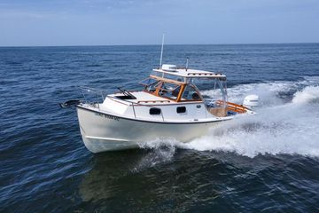

B-Atlas Boat Guide · SEAW-24-ST
Seaway 24 Sport Trawler
2005–2016
The Seaway 24 is a classic trawler and semi-displacement produced from 2005 to 2016. Typical examples use single outboard/inboard, mixed diesel/gasoline, and mixed outboard/shaft. The recorded configuration includes 1 cabin, 2 berths, and 1 head.

- Length
- 24 ft
- Beam
- 8.5 ft
- Draft
- 2 ft
- Hull behaviour
- Semi-Displacement
- Fuel
- Mixed Diesel/Gasoline
- Propulsion
- Mixed Outboard/Shaft
- Engine configuration
- Single Outboard/Inboard
- Boat family
- Trawler
- Construction
- Fiberglass
Best for
- Lightweight easy towing weight, traditional Downeast visual profile, exceptional slow-speed fuel efficiency
Trade-offs
- Very small forward V-berth layout, rolling motion in steep structural beam seas
Known concerns
- No model-specific concern has been promoted to B-Atlas’s evidence threshold. This does not mean the model has no age-, condition- or hull-specific risks.
Inspection focus
- Outboard transom bracket mounting bolt weeping, forward deck hatch gasket track sealing lines.
Continue researching
Related boat models
Seaway 28 Coastal Cruiser Coastal Cruiser
28 ft · Semi-Displacement
Nimble Nomad Pocket Trawler
24.5 ft · Displacement
Albin 27 Family Cruiser
26.75 ft · Semi-Displacement
Cape Dory 28 Flybridge Cruiser Flybridge Cruiser
27.92 ft · Semi-Displacement
Cheoy Lee 28 Sedan Trawler Sedan
27.92 ft · Semi-Displacement
Prairie 29 Coastal Cruiser Coastal Cruiser
29 ft · Semi-Displacement
About this record
B-Atlas preserves uncertainty: missing information remains unknown rather than being treated as a negative. Specifications and guidance describe the model record; individual boats can differ by year, equipment, refit and condition.